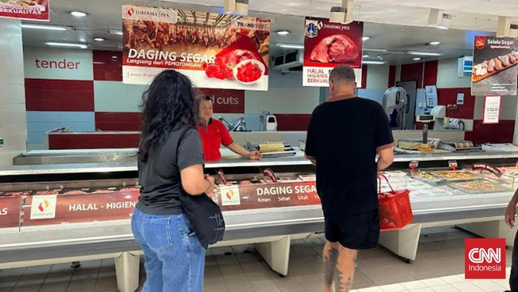

Abdee Pastikan Siap Tampil untuk Konser Ulang Tahun ke-41 Slank
Purwakarta, AboutNews-- Supaya makan malam di pergantian tahun bersama dengan orang-orang tersayang makin seru tapi tetap hemat, yuk belanja bahan makanannya di Transmart Full Day Sale saja, karena ada diskon 20 persen untuk produk segar. Mulai dari aneka daging shabu hingga ayam broiler per ekor didiskon 20 persen di Transmart Full Day Sale yang digelar hari ini, Minggu (29/12) mulai toko buka sampai pukul 22.00.
Transmart Full Day Sale, AC 1 PK Cuma Rp3 Jutaan Bonus Pipa dan Pasang Daging shabu sangat cocok disajikan dalam hot pot atau sukiyaki yang hangat, sedangkan ayam broiler bisa diolah menjadi berbagai menu favorit seperti ayam goreng, ayam bakar, atau ayam panggang yang pastinya bisa memanjakan lidah di malam tahun baru. Daging shabu slice 500 gr harga normal Rp127.500, harga diskon Rp102.000. Harga ini berlaku di Jabodetabek dan Karawang. Untuk ayam broiler harga normalnya Rp35.500 per ekor, harga diskon Rp28.400 per ekor. Harga berlaku di Jabodetabek.
Sepanjang Transmart Full Day Sale digelar, berbagai macam produk segar lainnya seperti jeruk shantang dan anggur globe didiskon 20 persen. Semua produk segar yang didiskon ini dapat dibeli di berbagai gerai Transmart se-Indonesia dan harga diskonnya akan menyesuaikan masing-masing kota, serta tidak berlaku untuk pembelian partai besar. Cukup melakukan transaksi belanja minimal Rp300 ribu dan pembayaran menggunakan Allo Prime, Kartu Kredit Bank Mega, atau Bank Mega Syariah, pelanggan dapat diskon 20 persen.
Bagi pelanggan yang belum punya aplikasi Allo Bank jangan khawatir, cukup mengunduh aplikasinya di Google Play Store atau App Store, kemudian upgrade akunmu ke Allo Prime. Jika belum memiliki kartu kredit Bank Mega atau Bank Mega Syariah, dapat langsung mengajukannya pembukaan kartu instan di booth yang tersedia di semua gerai Transmart.